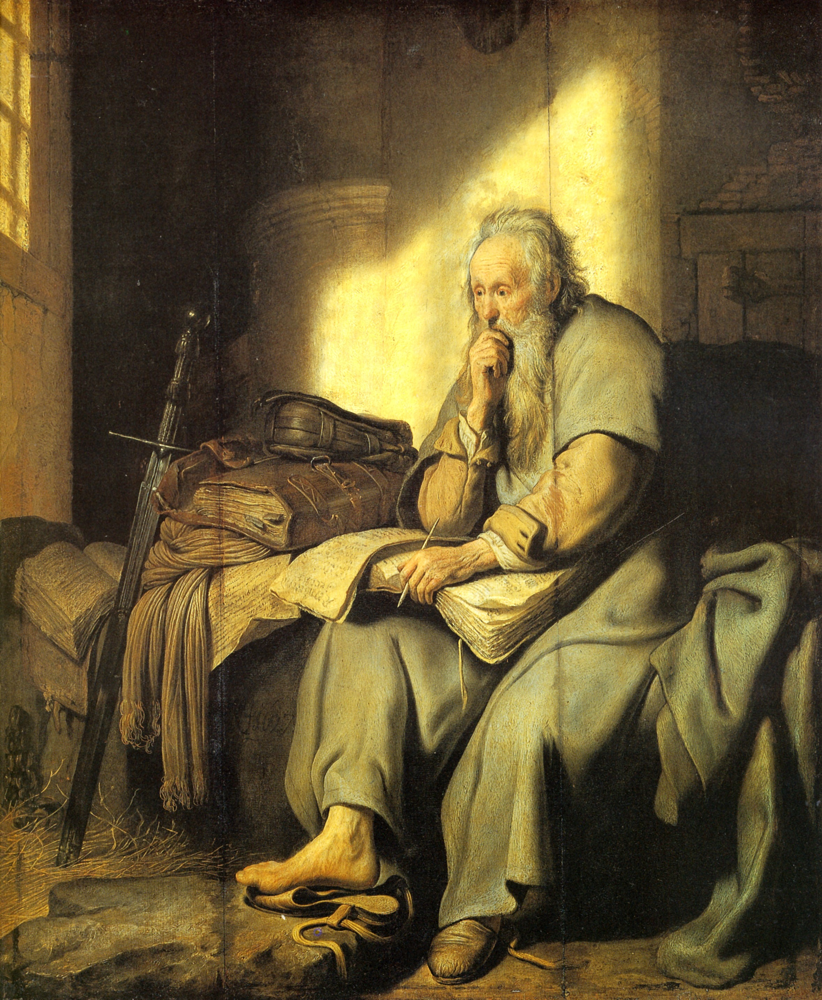

From the beginning, Paul’s calling came with a warning: the Lord said he would “show him how much he must suffer” for the sake of the name (Acts 9:16). He did not flinch from it. Hardship, for Paul, was not a sign that something had gone wrong but a participation in the sufferings of Christ.
I The Catalog of Hardships
In a remarkable passage, Paul lists what his ministry had cost him — not to boast in strength, but to boast in weakness:
“Five times I received… forty lashes less one. Three times I was beaten with rods. Once I was stoned. Three times I was shipwrecked… in danger from rivers, danger from robbers… in toil and hardship, through many a sleepless night, in hunger and thirst.” 2 Corinthians 11:24–27
The book of Acts fills in scenes behind that list: the stoning at Lystra (Acts 14:19), the beating and jailing at Philippi where he and Silas sang hymns at midnight (Acts 16:22–25), and the shipwreck on the way to Rome (Acts 27).

II The Thorn in the Flesh
Paul also carried a private, unnamed affliction he called a “thorn in the flesh” — something he begged God three times to remove. The answer he received reframed all his weakness as the stage for God’s power (2 Corinthians 12:7–10).
“For the sake of Christ, then, I am content with weaknesses… For when I am weak, then I am strong.” 2 Corinthians 12:10
III Imprisonment
Much of Paul’s later life was spent in custody — in Caesarea, on the voyage to Rome, and finally under guard in Rome itself (Acts 23–28). Yet he refused to see his chains as the end of his usefulness. From prison he wrote some of his warmest, most joyful letters, and claimed his imprisonment had actually “served to advance the gospel” (Philippians 1:12–14).
